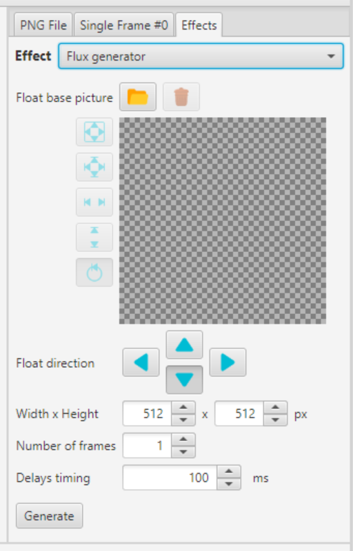
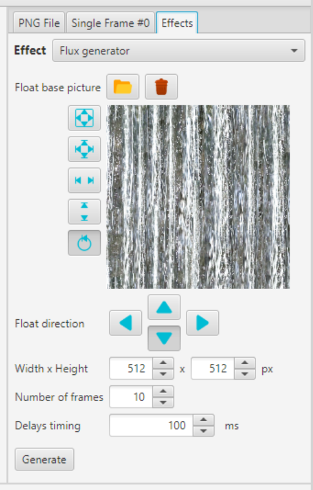
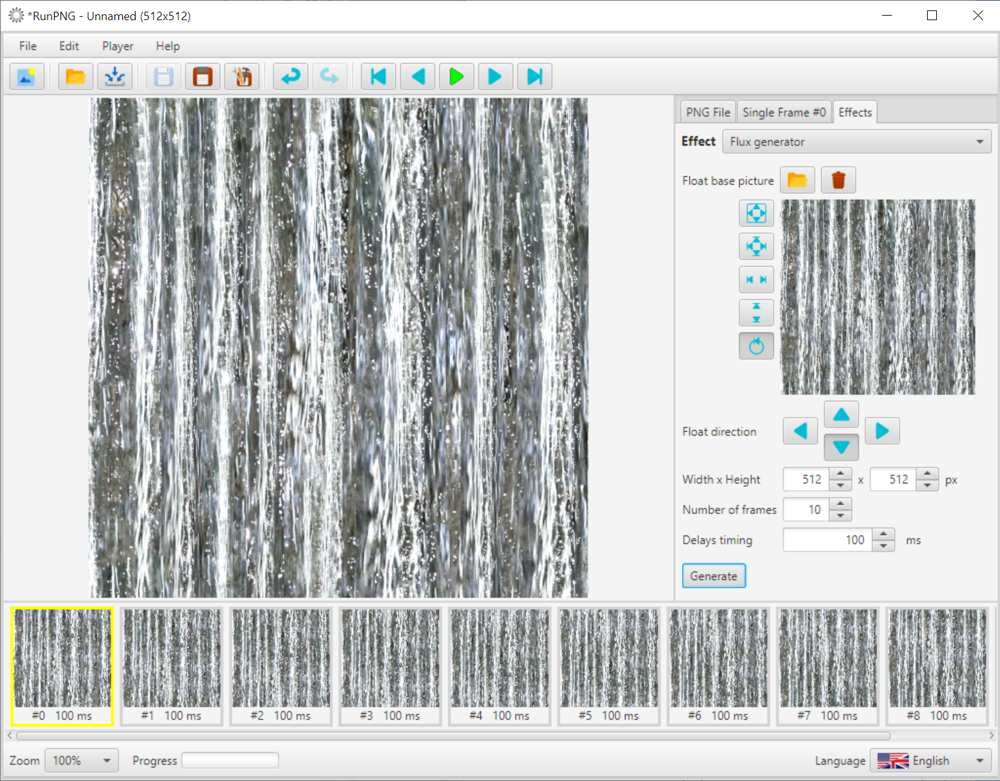

Flux Generator
The Flux generator is not applied to an existing image sequence, but creates a new one itself. An existing image sequence would be overwritten without warning. But don't worry; using the Undo function you will get the old sequence back. However, it would not be wrong to save your work beforehand and to empty the memory with File => New.
This is the dialog for the Flux generator. Above the already known picture box. Below that are buttons for the flow direction, from which only one can be selected at a time. Then follows the dimensioning (width x height). The number of images determines the increment of the individual images in pixels (height or width divided by the number of images). The delay time in milliseconds applies to each individual image. Finally the Generate button.
First we load an image with the  button that we want to let "flow".
So-called seamless textures are very suitable for this. Here we use an image of flowing water that has been prepared for "seamless".
It can be found under RunPNG/doc/samples/various/water 1.png. Width and height are taken from the image within the limits of
the minimum and maximum values. In this case the picture happens to have the standard dimensions of the application. But that doesn't
necessarily have to be the case.
button that we want to let "flow".
So-called seamless textures are very suitable for this. Here we use an image of flowing water that has been prepared for "seamless".
It can be found under RunPNG/doc/samples/various/water 1.png. Width and height are taken from the image within the limits of
the minimum and maximum values. In this case the picture happens to have the standard dimensions of the application. But that doesn't
necessarily have to be the case.
Let's enter 10 as the number of images. This corresponds to a step width of 51.2 pixels. However, 0.2 pixels does not exist because the image buffers still work with integer indexes. So that there is no visible slippage with a higher number of steps, the loop works with floating point and rounds the number of pixels to be shifted up or down. Whereby the first picture is not shifted and the following pictures by the respective step size in the desired direction. What falls out at one end when the image is shifted will be reinserted at the opposite end.
After clicking the Generate button, it looks like this. 10 images were generated. Successively shifted downwards by 51 or 52 pixels. The sequence of images can be viewed with the player and of course saved for further use.